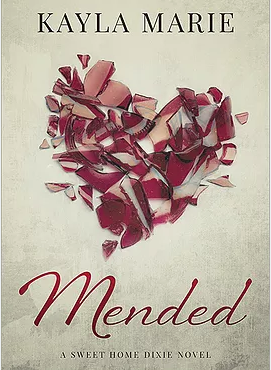

Kayla Marie
The Official Website of the Author of the
beautiful love story:
Mended

Welcome and thank you for taking the time to visit my webpage!
Here you will find everything you need to know about me and my work as a writer of contemporary romance. My first finished novel is a beautiful love story called Mended; a heartfelt story about tragedy and the incredible ability of love to mend even the deepest of wounds. I hope you will enjoy reading it as much as I enjoyed writing it.
Thank you for visiting!